Publications
2024
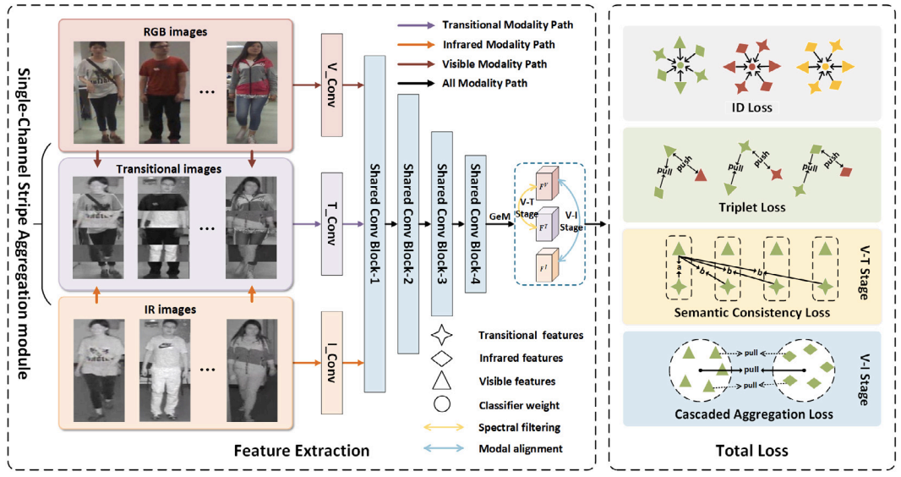
Progressive discrepancy elimination for visible-infrared person re-identification
Guoqing Zhang, Zhun Wang, Hairui Wang, Jieqiong Zhou, Yuhui Zheng
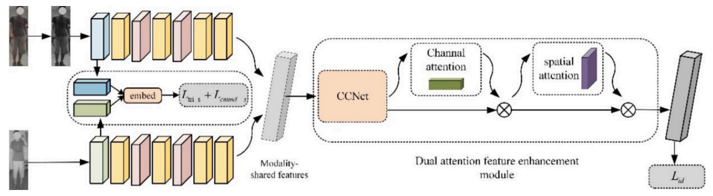
Learning dual attention enhancement feature for visible–infrared person re-identification
Guoqing Zhang, Yinyin Zhang, Hongwei Zhang, Yuhao Chen, Yuhui Zheng2023
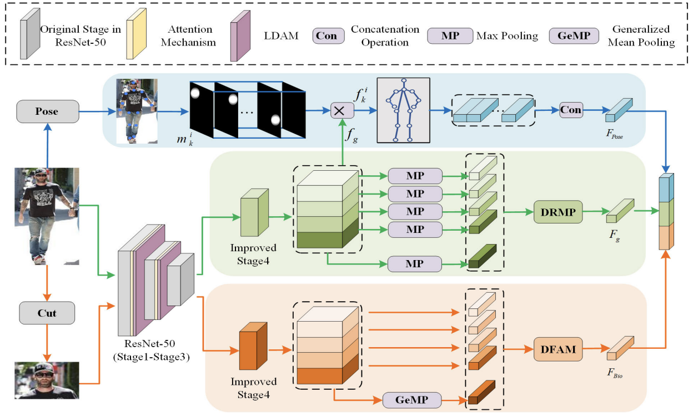
Multi-Biometric Unified Network for Cloth-Changing Person Re-Identification
Guoqing Zhang, Jie Liu, Yuhao ChenYuhui Zheng, Yuhao Chen,Hongwei Zhang
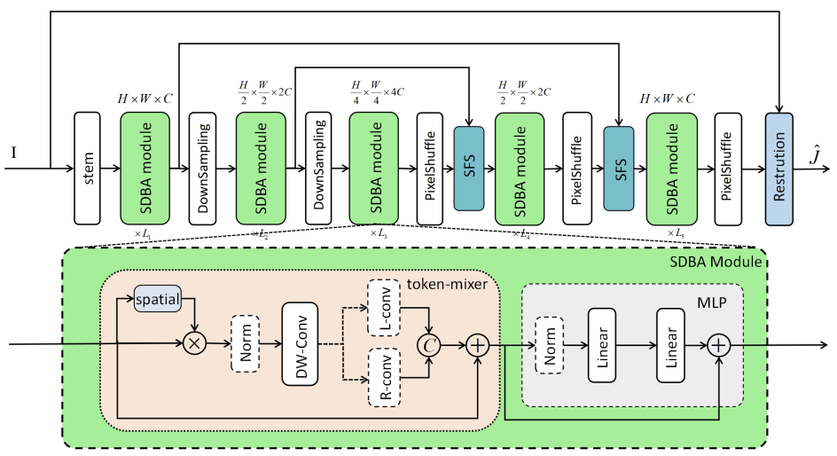
SDBAD-Net: A Spatial Dual-Branch Attention Dehazing Network based on Meta-Former Paradigm
Guoqing Zhang, Wenxuan Fang, Yuhui Zheng, Ruili Wang
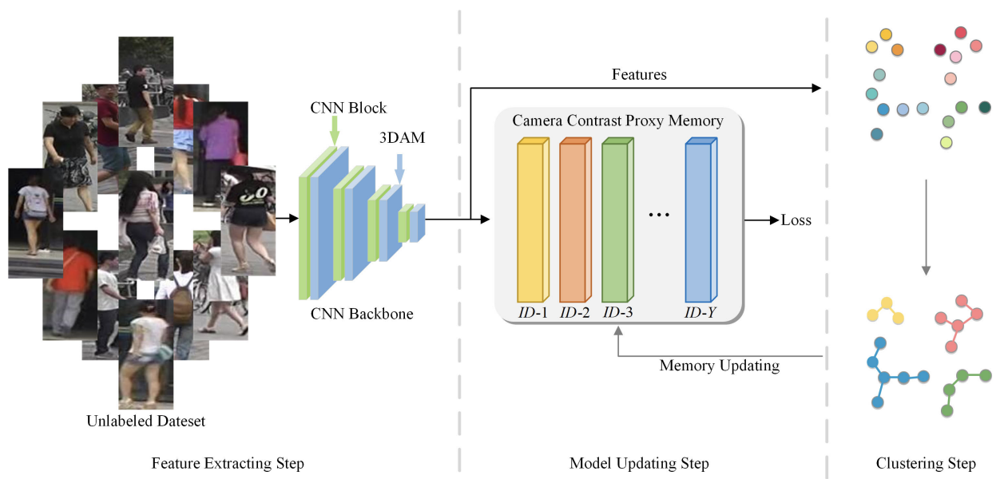
Camera Contrast Learning for Unsupervised Person Re-Identification
Guoqing Zhang, Hongwei Zhang, Weisi lin, Arun kumar Chandran, Xuan Jing
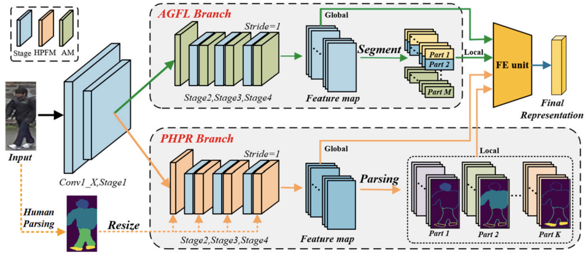
Complementary Networks for Person Re-Identification
Guoqing Zhang, Weisi lin, Arun kumar Chandran, Xuan Jing
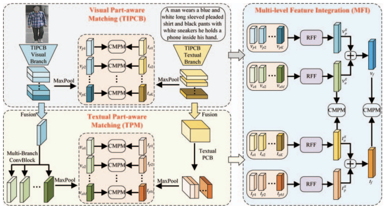
Multi-level Part-aware Feature Disentangling for Text-based Person Search
Yuhao Chen, Guoqing Zhang, Hongwei Zhang, Yuhui Zheng, Weisi Lin
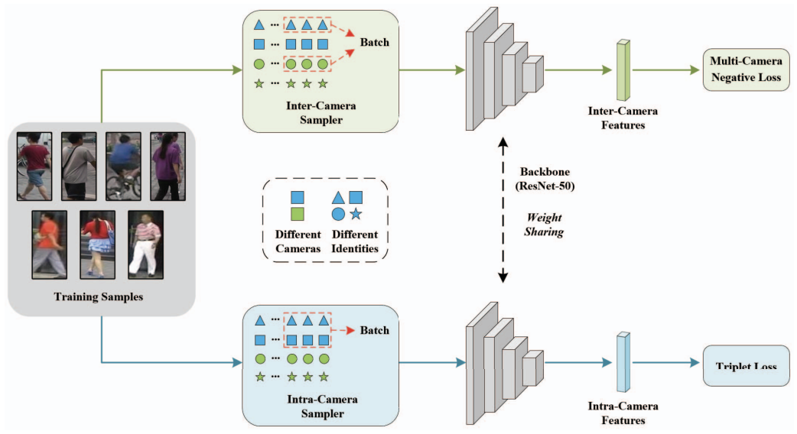
Inter-Intra Camera Identity Learning for Person Re-Identification with Training in Single Camera
Guoqing Zhang, Zhiyuan Luo, Weisi Lin, Jing Xuan
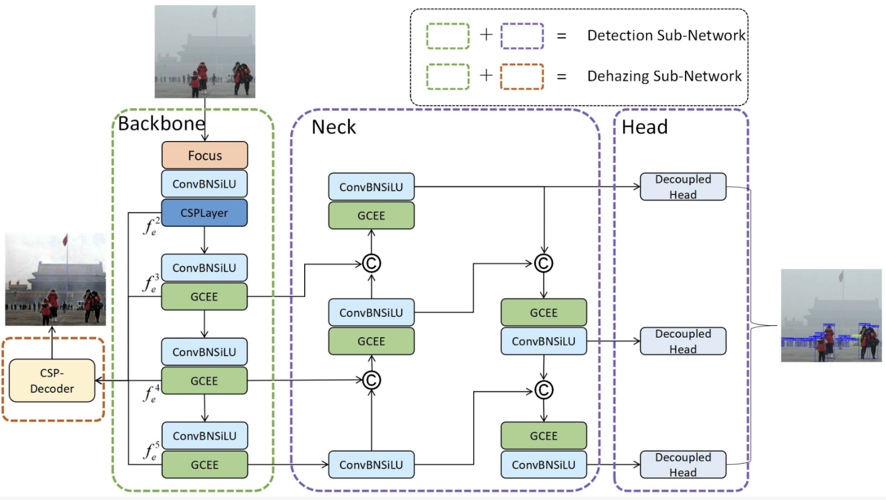
Multi-Task Learning for UAV Aerial Object Detection in Foggy Weather Condition
Wenxuan Fang, Guoqing Zhang, Yuhui Zheng, Yuwen Chen
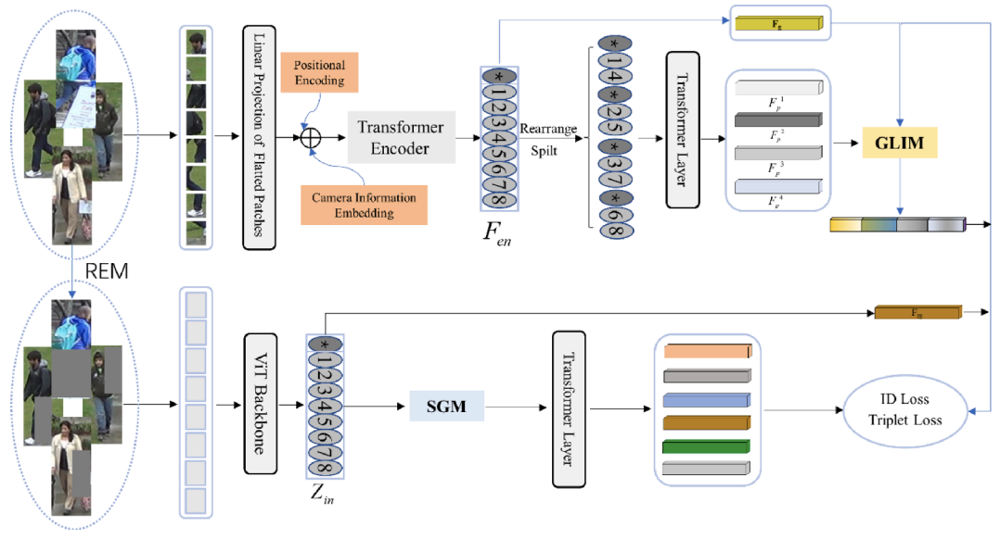
Transformer-based global-local feature learning model for occluded person re-identification
Guoqing Zhang, Chao Chen, Yuhao Chen, Hongwei Zhang, Yuhui Zheng
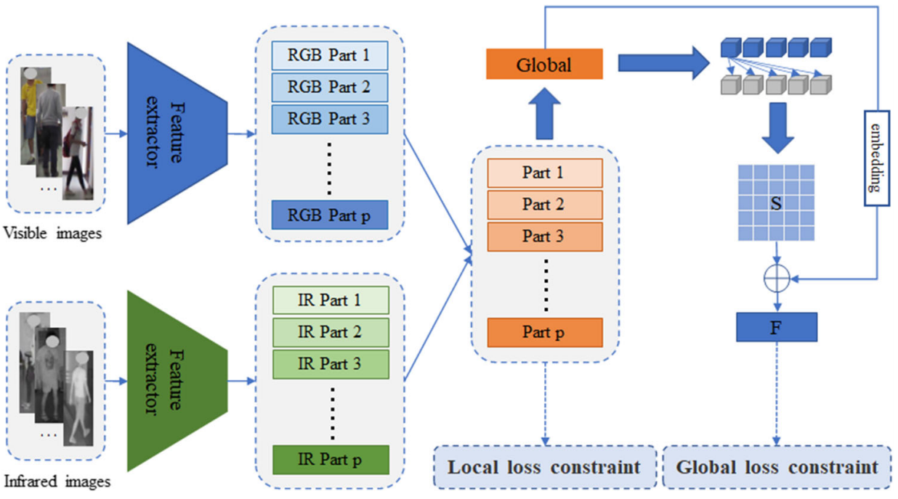